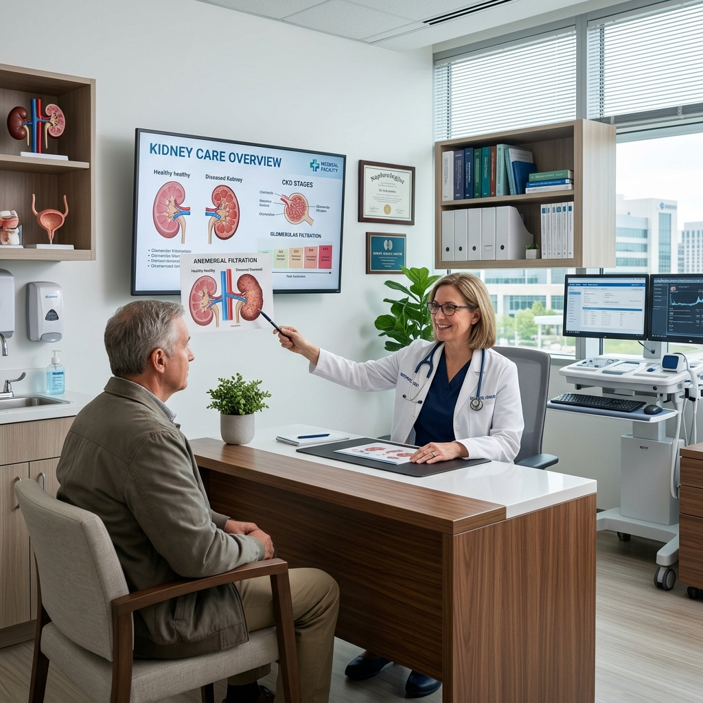
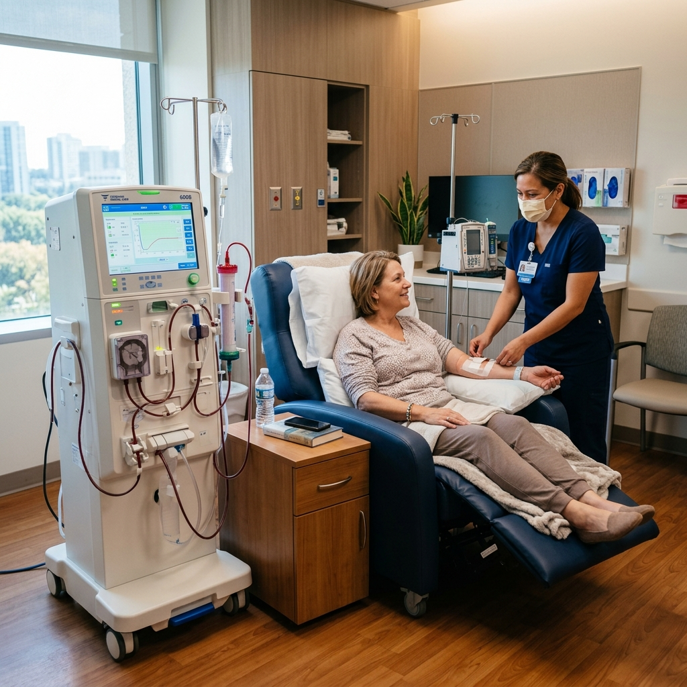

Supreme Excellence
Department of Nephrology
Advanced renal care and kidney health. Expert management from transplant evaluations to specialized dialysis services.
Renal Care Excellence
Overview
At Supreme Hospital, our Nephrology department has expert nephrologists who are specialized in diagnosing and treating kidney-related diseases and disorders. Our Nephrologists, and specialized physicians, manage a spectrum of conditions, including acute/chronic kidney diseases, electrolyte imbalances, hypertension linked to kidney issues, and even Kidney Transplant Surgery.

Advanced Renal Support
State-of-the-art Dialysis
We are pleased to announce the launch of our state-of-the-art Dialysis Machine, designed to deliver safe, efficient, and comfortable renal care with advanced medical technology and patient-focused outcomes.
- High-efficiency dialysis with precise fluid management
- Advanced safety monitoring for enhanced protection
- Faster, smoother sessions with minimal discomfort
- Comfortable, patient-friendly treatment environment

Comprehensive Care
Key Aspects of Nephrology
Hypertension Management
Nephrologists address high blood pressure, a common cause of kidney damage, collaborating with Supreme Hospitals.
Dialysis
Severe kidney function decline may require renal replacement therapy such as hemodialysis or peritoneal dialysis. At Kidney Specialist Hospital, we offer both dialysis options, ensuring personalized treatments to meet each patient’s unique health needs. Our expert nephrology team focuses on patient comfort, safety, and continuous care and monitoring throughout the dialysis process, helping you manage kidney function decline effectively.
Kidney Transplantation
For patients with advanced kidney failure, a kidney transplant can provide a life-changing solution. At Kidney Specialist Hospital, we offer comprehensive care, guiding patients through every step—from pre-transplant evaluation to post-transplant management. Our skilled team of nephrologists and transplant specialists works closely with each patient, utilizing the latest techniques and personalized care strategies to ensure a successful transplant and long-term health.
Electrolyte and Acid-Base Disorders
Experts in diagnosing and treating electrolyte imbalances and acid-base disorders, nephrologists play a vital role in maintaining balance post-kidney Transplant surgery.
Diagnostic Tools
Utilizing various diagnostic tools, including blood/urine tests, imaging studies, and kidney biopsies, nephrologists evaluate kidney function at Supreme Hospitals.
Prevention and Education
Nephrologists educate on kidney health, recommend lifestyle changes and medication management for disease prevention, and collaborative with Supreme Hospitals.
As a leading Kidney Specialist Hospital, Supreme Hospital ensures holistic kidney care. Nephrologists at Supreme Hospitals lead in diagnosis, treatment, and management, enhancing patients’ overall quality of life.
Renal Guidance Experts
Our Experts
Kidney Health Guidance
Frequently Asked Questions
Kidney disease can often be managed effectively, especially in the early stages. While chronic kidney disease is usually not reversible, proper treatment, lifestyle changes, and regular monitoring can slow its progression and help maintain kidney function for a longer time
During your first visit, the nephrologist will review your medical history, examine your symptoms, and may suggest tests like blood and urine analysis. The goal is to understand how your kidneys are functioning and create a personalized care plan to manage any existing or potential kidney issues.
You may be referred to a nephrologist if your doctor detects abnormal kidney function, persistent high blood pressure, or symptoms like swelling, fatigue, or unusual lab results. Nephrologists specialize in diagnosing and managing kidney conditions before they progress into more serious problems